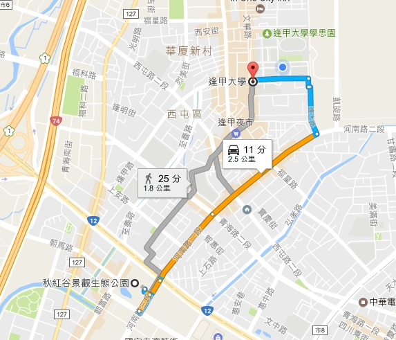
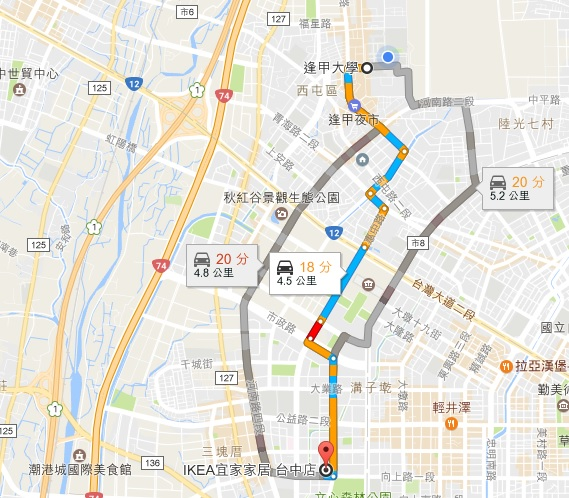
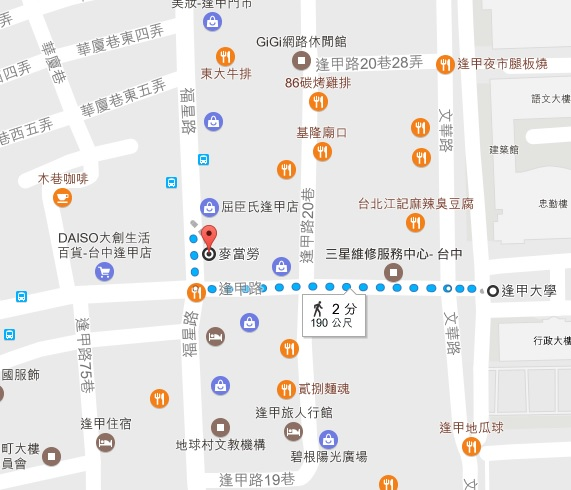
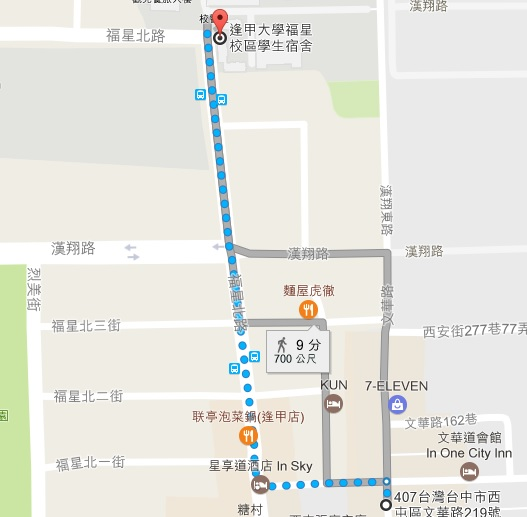
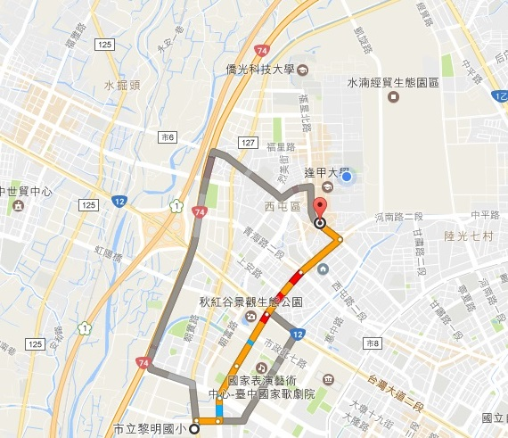
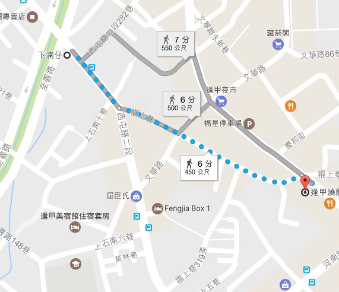
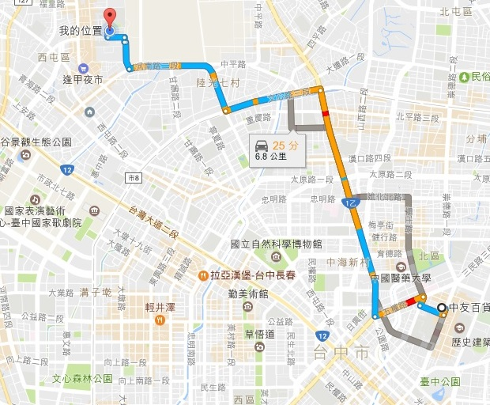
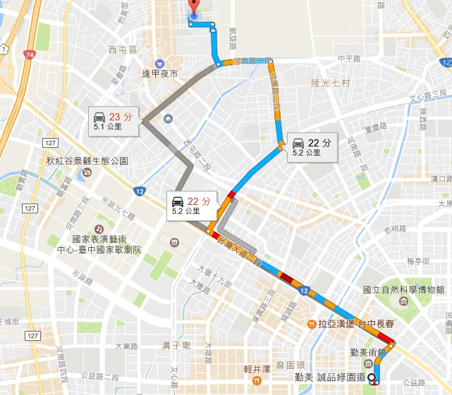
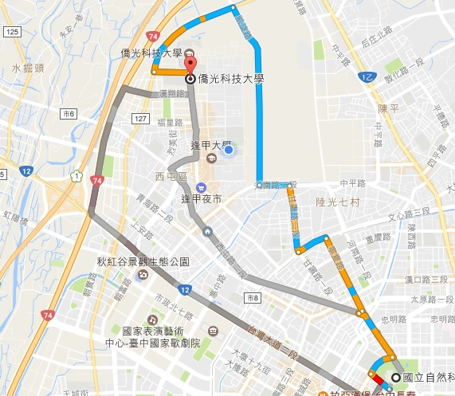
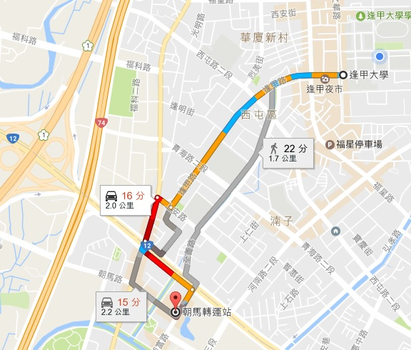

2016.12.19 11:01 逢甲大學 到 麥當勞 2016.12.19 17:58 弘爺早餐店 到 福星宿舍
 
 
2016.12.21 09:33 黎明國小 到 福星停車場 2016.12.22 13:24 下湳仔 到 逢甲燒餅豆漿
 
2016.12.22 20:54 中友百貨 到 逢甲大學 2016.12.22 16:44 勤美誠品綠園道 到 逢甲大學
 
2016.12.22 08:30 台中自然科學博物館 到 僑光科技大學 2016.12.23 18:35 逢甲大學 到 朝馬
 
2016.12.24 22:14 秋虹谷廣場 到 逢甲大學 2016.12.24 15:57 逢甲大學 到 IKEA